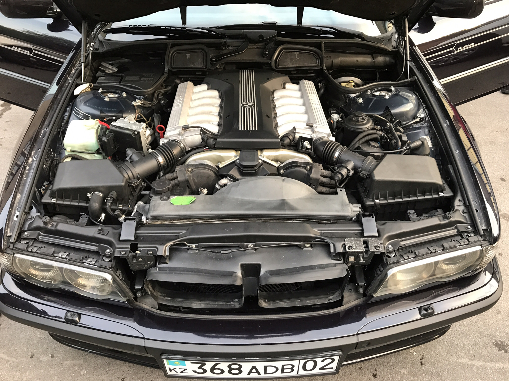
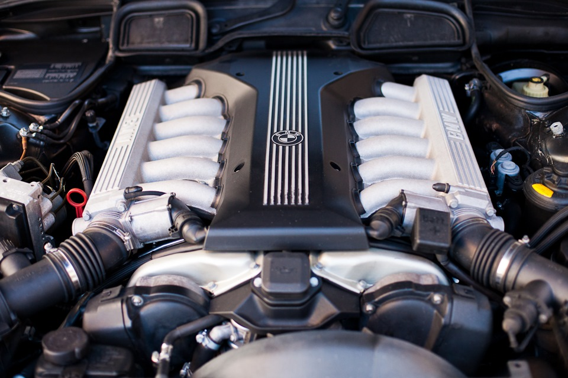

BMW 7-й серии (E38) — третье поколение люксовых[en] автомобилей 7-й серии, выпускавшихся с 1994 по 2001 год немецким автопроизводителем BMW. Наряду с бензиновыми двигателями, впервые в истории фирмы на автомобили класса люкс стали устанавливать дизельные моторы. Помимо моделей с удлинённой колёсной базой и версий со специальной защитой[en], выпускался также лимузин. Всего было изготовлено 327,6 тыс. автомобилей[5].
| BMW E38 | |
| Общие данные | |
| Производитель | BMW |
| Годы производства | 1994—2001 |
| Сборка | Дингольфинг, Германия |
| класс | предтавительский |
| ДИЗАЙН-КОНСТРУКЦИЯ | |
| Тип кузова | 4‑дв. седан (5‑мест.), 4‑дв. лимузин (5‑мест.) |
| компоновка | переднемоторная, заднеприводная |
Кузов и оборудование
Спрофилированный для лучшей обтекаемости задок и крышка багажника, скрытые за бампером выхлопные трубы позволили снизить до 0,3 коэффициент аэродинамического сопротивления. Дополнительным эффектом от этого было также снижение шума и загрязнения автомобиля[6]. Силовая структура кузова была значительно усилена, особенно в зоне центрального тоннеля, что позволило добиться его угловой жёсткости в 25 000 Нм/град. Это существенно снизило шум и вибрацию, особенно в передней части салона. Новые методы компьютерного проектирования и применение высокопрочных сталей позволили снизить долю кузова в общем весе автомобиля до величины менее чем 20 %.
Горизонтальные вставки из дерева располагались не только на передней панели, но и на дверях, разъединяя и объединяя различные по цвету и фактуре зоны сверху и снизу[8]. С помощью кнопок на рулевом колесе можно было управлять радио, круиз-контролем, включением рециркуляции воздуха и телефоном. Все кнопочки подсвечивались, а выбираемые значения отображались на приборной панели[9]. Имелось три вида передних сидений. Стандартное имело электрорегулировку положения (вперёд-назад), высоты подушки и угла наклона спинки и подушки. У комфортабельного сиденья (comfort seat) дополнительно регулировался поясничный подпор и боковые упоры на спинке. Контурное сиденье (contour seat) в дополнение ко всему имело электрорегулировку длины подушки и её боковых упоров. У задних сидений регулировался наклон спинки, поясничный подпор и высота подголовника[10].
В 1998 году все модели получили небольшое обновление внешнего вида. Новые фары подчёркнуты «волной» снизу, как на автомобилях новой 3-й серии. Так передок больше похож на типичный для автомобилей BMW четырёхфарный. Указатели поворотов по краям стали чуть уже, «ноздри» не изменились, но решётка внутри них стала более выпуклой. Сзади в качестве опции появилась хромированная накладка на крышку багажника над номерным знаком, а также изменились задние фонари. В дорестайлинге фонари были из пластика, а в рестайлинге из стекла. Салон менялся на протяжении всего производства: в 1996 году в качестве опции появился монитор 4:3 с навигацией, в том же году немного изменились органы управления сидением; в 1998 году изменилась кнопка центрального замка, в качестве опции появился спортивный 3-спицевый руль, также появился массаж передних сидений; в конце 1999 года вместо монитора 4:3 появился монитор 16:9 с новой навигацией. Появились подсвечивающиеся ручки дверей. Как только автомобиль отпирался с брелока, миниатюрные лампочки загорались во всех четырёх дверных ручках, дополнительно освещая пространство под ногами. В салоне теперь использовались новые материалы отделки, вместо радиотелефона, можно было заказать сотовый телефон, подключённый к информационной системе автомобиля и управляемый прямо с руля[11]. Автомобиль стандартно стали оборудовать десятью подушками безопасности[12]. Все модели с бензиновыми двигателями выпускались как в обычном исполнении, так и в версии с удлинённой на 140 мм колёсной базой. Длиннобазные версии с самыми мощными двигателями можно было заказать в защищённом (protection) исполнении. В определённых местах кузова такого автомобиля были установлены панели из кевлара. Вес защищённой модели возрастал всего на 145 килограммов. Помимо этого автомобиль оснащался бронированными стёклами, защищавшими пассажиров от лёгкого огнестрельного оружия и специальными шинами, которые, даже простреленные, позволяли проехать до 500 км на скорости 80 км/ч[13]. Вершиной модельного ряда был лимузин, салон которого был почти на 40 сантиметров длиннее. Созданный для удовлетворения потребностей знаменитостей и особо важных персон автомобиль предлагал исключительный комфорт и мог оснащаться любыми доступными опциями. Такие модели изготавливались в небольшом количестве по индивидуальным заказам[14]. Также в 2000 году произошли небольшие изменения (лёгкие изменения пепельницы, дерево инкрустированное слегка другой породой и небольшое улучшение двигателей), сам автомобиль не потерпел обновлений.
Двигатели и трансмиссия
 Автомобили комплектовались рядными шестицилиндровыми, V-образными восьмицилиндровыми бензиновыми и дизельными двигателями, или двенадцатицилиндровым бензиновым мотором. Все двигатели располагались спереди продольно и состыковывались с пяти[15] или шестиступенчатой[16] механической коробкой передач или пятиступенчатой автоматической[17]. Можно было заказать автоматическую коробку Steptronic с возможностью переключения передач вручную[18]. Ведущими были задние колёса, вращение на которые передавалось с помощью карданного вала. Модель начального уровня 728i (728iL) оборудовалась бензиновым рядным шестицилиндровым двигателем серии M52 рабочим объёмом 2,8 литра мощностью 193 л. с., заимствованным от моделей 328i и 528i. Это был двигатель с алюминиевыми головкой и блоком цилиндров, двумя верхними распредвалами, четырьмя клапанами на цилиндр (DOHC) и фирменной системой изменения фаз газораспределения VANOS[19]. Модели 730i (730iL) и 740i (740iL) первоначально комплектовались V-образными восьмицилиндровыми двигателями серии M60 рабочим объёмом три и четыре литра и мощностью 218 и 286 л. с. соответственно. Этот двигатель с углом развала цилиндров 90° имел алюминиевые блок и головки цилиндров, по два верхних распредвала в каждой головке и по четыре клапана на цилиндр (DOHC)[20][21]. Начиная с 1996 года, модели получили новый двигатель серии M62 с системой изменения фаз газораспределения VANOS. Двигатель рабочим объёмом 3,5 литра мощностью 238 л. с. достался новой модели 735i (735iL), которая заменила модель 730i (730iL), а двигатель объёмом 4,4 литра мощностью 286 л. с. стали устанавливать на сохранившую свое обозначение модель 740i (740iL)[22][23].
Большой V-образный двенадцатицилиндровый двигатель серии M73 устанавливался на модели 750i (750iL) и L7. Мотор был дальнейшим развитием первого послевоенного двигателя фирмы такой конфигурации, которому просто увеличили до 5,4 литров рабочий объём, что довело его мощность до 326 л. с. Двигатель имел, изготовленный из алюминиевого сплава, блок цилиндров с развалом 60°, алюминиевые головки, в которых располагалось по одному распредвалу, по два клапана на цилиндр (SOHC)[24] Рядный шестицилиндровый дизель серии M51 с турбонаддувом и промежуточным охлаждением воздуха устанавливался на модель 725tds. Двигатель имел рабочий объём 2,5 литра и развивал 143 л. с.[25] На модель 730d также устанавливался рядный шестицилиндровый дизельный двигатель, но это был новый мотор серии M57 с турбонаддувом и аккумуляторной системой впрыска топлива. Этот современный двигатель имел чугунные головку и блок цилиндров, два верхних распредвала и по четыре клапана на цилиндр. Его рабочий объём составлял три литра, мощность в 1998—1999 году составляла 184 лошадиные силы, а в 2000—2001 году — 193 силы. Модель 740d оснащалась также совершенно новым V-образным восьмицилиндровым дизелем M67 объёмом 3,9 литра мощностью 245 л. с. Этот мотор имел угол развала цилиндров 90°, блок и головки цилиндров, изготовленные из высокопрочного чугуна, по два верхних распредвала в каждой головке и по четыре клапана на цилиндр (DOHC), два турбокомпрессора и также оснащался аккумуляторной системой непосредственного впрыска топлива[26].
Модельный ряд
Летом 1994 года были представлены первые модели серии: 730i[37] и за доплату в 10 000 марок — её версия с удлинённой колёсной базой 730iL[38], модель 740i[39] и за доплату в 15 000 марок — её удлинённая версия 740iL[40], все с восьмицилиндровыми моторами и модели с двенадцатицилиндровым двигателем, 750i[41] с, за доплату в 20 000 марок[42] — удлинённой версией 750iL[2]. Осенью 1995 года была представлена модель 728i[43] и её удлинённая версия 728iL[44] с шестицилиндровым двигателем. Весной 1996 года модель 735i[45] со своей удлинённой версией 735iL[46] с новым восьмицилиндровым двигателем заменили модель 730i (730iL). Новый восьмицилиндровый мотор также стали устанавливать на самую успешную модель серии 740i (740iL)[39]. В 1996 году была представлена модель 725tds, первая модель с дизельным двигателем среди автомобилей класса люкс[en] фирмы. За ней в 1998 году последовала модель 730d, также с шестицилиндровым дизелем, и ещё одна дизельная модель 740d с новым восьмицилиндровым мотором в 1999 году[47]. В 1997 году стартовало производство огромного лимузина L7 длиной почти 5,4 метра, созданного на базе модели 750iL и использовавшего такой же двенадцатицилиндровый двигатель[14].
BMW 750HL


11 мая 2000 года BMW представил в Берлине 15 водородных автомобилей «750hL», как «первый в мире водородный автомобиль, построенный небольшой серией». Водородный двигатель V12 мог работать как на водороде, так и на бензине. При работе на водороде он развивает мощность 150 кВт (204 л. с.)и разгонял автомобиль до 100 км/ч за 9,6 секунды при максимальной скорости 226 км в час. Производство водородных двигателей было интегрировано в обычное производство двигателей на заводе в Дингольфинге. Существенно отличается от обычных бензиновых двигателей только впускной тракт с дополнительными клапанами впрыска водорода. Водород хранился за спинками задних сидений криогенно при температуре −253 °C в стальном резервуаре с двойными стенками. Бак для водорода вмещал 140 литров и обеспечивал дополнительный запас хода до 350 км. Кроме того, 750hL имел топливный элемент мощностью 5 кВт при 42 В. Он служил не приводом, а вспомогательной силовой установкой (APU) для питания бортовой сети. С февраля по ноябрь 2001 года автомобили находились в городах в рамках «Мирового тура CleanEnergy 2001»[50].